Cypress 在过去几年一直是最受欢迎的 E2E 测试库，但 Playwright 正在迅速获得市场份额。本课程多年来一直使用 Cypress。现在 Playwright 成为了一个新的补充。你可以选择用 Cypress 或 Playwright 完成课程的 E2E 测试部分。这两个库的运行原理非常相似，所以你的选择并不重要。然而，目前 Playwright 是课程首选的 E2E 测试库。
如果你选择 Cypress，请继续。如果你最终使用 Playwright，请点这里。
Cypress
E2E库Cypress在去年开始流行。Cypress特别容易使用，与Selenium等相比，它需要的麻烦和头绪要少得多。
它的操作原理与大多数E2E测试库完全不同，因为Cypress测试完全在浏览器中运行。
其他库在一个Node进程中运行测试，该进程通过API与浏览器相连。
让我们为我们的笔记应用做一些端到端的测试。
我们首先将Cypress安装到前端作为开发依赖项
npm install --save-dev cypress
并添加一个npm-script来运行它。
{
// ...
"scripts": {
"start": "react-scripts start",
"build": "react-scripts build",
"test": "react-scripts test",
"eject": "react-scripts eject",
"server": "json-server -p3001 db.json",
"cypress:open": "cypress open" // highlight-line
},
// ...
}
与前端的单元测试不同，Cypress的测试可以在前端或后端仓库中，甚至可以在它们自己的独立仓库中。
测试需要被测系统正在运行。与我们的后端集成测试不同，Cypress测试在运行时不会启动系统。
让我们给后端添加一个npm-script，在测试模式下启动它，或者让NODE_ENV成为测试。
{
// ...
"scripts": {
"start": "cross-env NODE_ENV=production node index.js",
"dev": "cross-env NODE_ENV=development nodemon index.js",
"build:ui": "rm -rf build && cd ../../../2/luento/notes && npm run build && cp -r build ../../../3/luento/notes-backend",
"deploy": "git push heroku master",
"deploy:full": "npm run build:ui && git add . && git commit -m uibuild && git push && npm run deploy",
"logs:prod": "heroku logs --tail",
"lint": "eslint .",
"test": "cross-env NODE_ENV=test jest --verbose --runInBand",
"start:test": "cross-env NODE_ENV=test node index.js" // highlight-line
},
// ...
}
NB!为了让Cypress与WSL2一起工作，可能需要先做一些额外的配置。这两个链接是开始的好地方。
NB!对于使用m1 CPU而不是intel CPU的macbook，cypress不能工作，因为它还不支持m1。要解决这个问题，安装Rosetta 2然后配置你的终端是必须的。关于一步一步的说明，请按照这里。
当后端和前端都在运行时，我们可以用以下命令启动Cypress
npm run cypress:open
当我们第一次运行Cypress时，它会创建一个cypress目录。它包含一个integration子目录，我们将在那里放置我们的测试。Cypress在两个子目录中为我们创建了一堆测试示例：integration/1-getting-started和integration/2-advanced-examples目录。我们可以删除这两个目录，在文件note_app.spec.js中做我们自己的测试。
describe('Note app', function() {
it('front page can be opened', function() {
cy.visit('http://localhost:3000')
cy.contains('Notes')
cy.contains('Note app, Department of Computer Science, University of Helsinki 2022')
})
})
我们从打开的窗口开始进行测试。
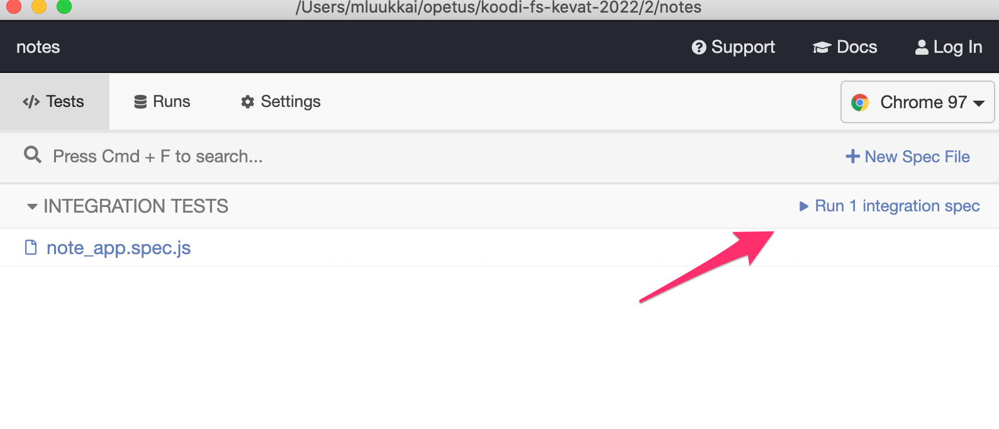
注意：删除示例测试后，你可能需要重新启动Cypress。
运行测试会打开你的浏览器，并显示应用在运行测试时的表现。
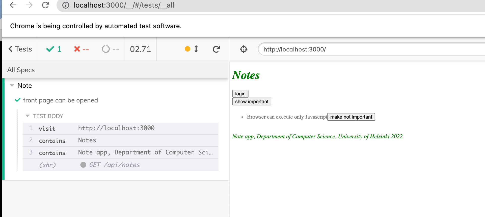
测试的结构应该看起来很熟悉。他们使用describe块来分组不同的测试用例，像Jest那样。测试用例已经用it方法进行了定义。
Cypress从它在引擎盖下使用的Mocha测试库中借用了这些部分。
cy.visit和cy.contains是Cypress的命令，它们的目的非常明显。
cy.visit在测试所使用的浏览器中打开作为参数给它的网页地址。cy.contains搜索它从网页上收到的作为参数的字符串。
我们可以用一个箭头函数来声明这个测试
describe('Note app', () => { // highlight-line
it('front page can be opened', () => { // highlight-line
cy.visit('http://localhost:3000')
cy.contains('Notes')
cy.contains('Note app, Department of Computer Science, University of Helsinki 2022')
})
})
然而，Mocha建议不要使用箭头函数，因为它们在某些情况下可能导致一些问题。
如果cy.contains没有找到它要搜索的文本，测试就不会通过。 因此，如果我们像这样扩展我们的测试
describe('Note app', function() {
it('front page can be opened', function() {
cy.visit('http://localhost:3000')
cy.contains('Notes')
cy.contains('Note app, Department of Computer Science, University of Helsinki 2022')
})
// highlight-start
it('front page contains random text', function() {
cy.visit('http://localhost:3000')
cy.contains('wtf is this app?')
})
// highlight-end
})
测试失败
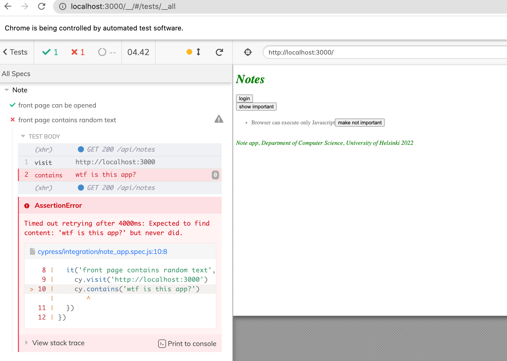
让我们从测试中删除失败的代码。
Writing to a form
让我们扩展我们的测试，使测试尝试登录到我们的应用。
我们假设我们的后端包含一个用户名mluukkai和密码salainen的用户。
测试从打开登录表单开始。
describe('Note app', function() {
// ...
it('login form can be opened', function() {
cy.visit('http://localhost:3000')
cy.contains('login').click()
})
})
测试首先通过文本搜索登录按钮，并通过命令cy.click点击按钮。
我们的两个测试都是以同样的方式开始的，打开http://localhost:3000页面，所以我们应该
将共享部分分离成一个beforeEach块，在每个测试前运行。
describe('Note app', function() {
// highlight-start
beforeEach(function() {
cy.visit('http://localhost:3000')
})
// highlight-end
it('front page can be opened', function() {
cy.contains('Notes')
cy.contains('Note app, Department of Computer Science, University of Helsinki 2022')
})
it('login form can be opened', function() {
cy.contains('login').click()
})
})
登录字段包含两个输入字段，测试应该把它们写进。
cy.get命令允许通过CSS选择器搜索元素。
我们可以访问页面上的第一个和最后一个输入字段，并通过cy.type命令写入它们，就像这样。
it('user can login', function () {
cy.contains('login').click()
cy.get('input:first').type('mluukkai')
cy.get('input:last').type('salainen')
})
这个测试是有效的。问题是，如果我们以后添加更多的输入字段，测试就会中断，因为它期望它需要的字段是页面上的第一个和最后一个。
最好是给我们的输入以唯一的ids，并使用这些来找到它们。
我们像这样改变我们的登录表格。
const LoginForm = ({ ... }) => {
return (
<div>
<h2>Login</h2>
<form onSubmit={handleSubmit}>
<div>
username
<input
id='username' // highlight-line
value={username}
onChange={handleUsernameChange}
/>
</div>
<div>
password
<input
id='password' // highlight-line
type="password"
value={password}
onChange={handlePasswordChange}
/>
</div>
<button id="login-button" type="submit"> // highlight-line
login
</button>
</form>
</div>
)
}
我们还为我们的提交按钮添加了一个ID，这样我们就可以在测试中访问它。
测试变成了。
describe('Note app', function() {
// ..
it('user can log in', function() {
cy.contains('login').click()
cy.get('#username').type('mluukkai') // highlight-line
cy.get('#password').type('salainen') // highlight-line
cy.get('#login-button').click() // highlight-line
cy.contains('Matti Luukkainen logged in') // highlight-line
})
})
最后一行确保登录成功。
注意CSS的id-selector是#，所以如果我们想搜索一个id为username的元素，CSS选择器是#username。
Some things to note
测试首先点击按钮，打开登录表单，就像这样
cy.contains('login').click()
当表格填写完毕后，点击提交按钮，表格被提交。
cy.get('#login-button').click()
两个按钮都有文本login，但它们是两个独立的按钮。
实际上两个按钮一直都在应用的DOM中，但由于其中一个按钮的display:none样式，每次只有一个是可见的。
如果我们通过文本搜索一个按钮，cy.contains将返回其中的第一个，或打开登录表单的那个。
即使该按钮不可见，也会发生这种情况。
为了避免名称冲突，我们给了提交按钮一个id login-button，我们可以用它来访问。
现在我们注意到，我们测试使用的变量_cy_给了我们一个讨厌的Eslint错误
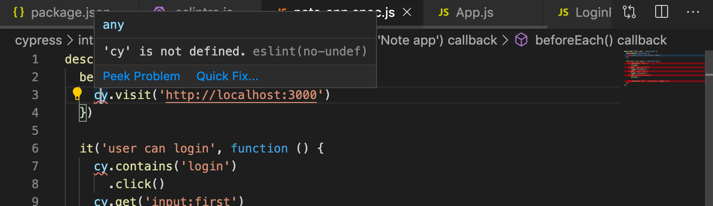
我们可以通过安装eslint-plugin-cypress作为开发依赖来摆脱它。
npm install eslint-plugin-cypress --save-dev
然后改变.eslintrc.js中的配置，像这样。
module.exports = {
"env": {
"browser": true,
"es6": true,
"jest/globals": true,
"cypress/globals": true // highlight-line
},
"extends": [
// ...
],
"parserOptions": {
// ...
},
"plugins": [
"react", "jest", "cypress" // highlight-line
],
"rules": {
// ...
}
}
Testing new note form
接下来我们添加测试 "新笔记 "功能的测试。
describe('Note app', function() {
// ..
// highlight-start
describe('when logged in', function() {
beforeEach(function() {
cy.contains('login').click()
cy.get('input:first').type('mluukkai')
cy.get('input:last').type('salainen')
cy.get('#login-button').click()
})
// highlight-end
// highlight-start
it('a new note can be created', function() {
cy.contains('new note').click()
cy.get('input').type('a note created by cypress')
cy.contains('save').click()
cy.contains('a note created by cypress')
})
})
// highlight-end
})
这个测试已经被定义在它自己的describe块中。
只有登录的用户才能创建新的笔记，所以我们在beforeEach块中加入了登录应用。
测试相信当创建一个新的笔记时，页面只包含一个输入，所以它像这样搜索它。
cy.get('input')
如果该页面包含更多的输入，测试就会中断。
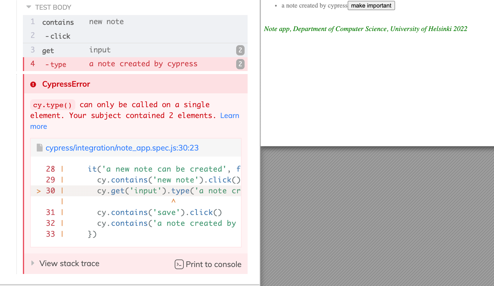
由于这个原因，最好还是给输入一个id，并通过它的id搜索元素。
测试的结构看起来是这样的。
describe('Note app', function() {
// ...
it('user can log in', function() {
cy.contains('login').click()
cy.get('#username').type('mluukkai')
cy.get('#password').type('salainen')
cy.get('#login-button').click()
cy.contains('Matti Luukkainen logged in')
})
describe('when logged in', function() {
beforeEach(function() {
cy.contains('login').click()
cy.get('input:first').type('mluukkai')
cy.get('input:last').type('salainen')
cy.get('#login-button').click()
})
it('a new note can be created', function() {
// ...
})
})
})
Cypress按照代码中的顺序运行测试。因此，首先它运行user can log in，其中用户登录。然后，Cypress将运行一个新的笔记可以被创建，为此，一个beforeEach块也会登录。
为什么这样做？用户在第一次测试后不是已经登录了吗？
不是，因为就浏览器而言，每个测试都是从零开始的。
每次测试后，对浏览器状态的所有改变都是相反的。
Controlling the state of the database
如果测试需要能够修改服务器的数据库，情况会立即变得更加复杂。理想情况下，每次我们运行测试时，服务器的数据库应该是相同的，所以我们的测试可以可靠地、容易地重复。
与单元和集成测试一样，对于E2E测试，最好是在测试运行前清空数据库，并可能将其格式化。E2E测试的挑战是他们不能访问数据库。
解决方法是为测试的后端创建API端点。
我们可以使用这些端点清空数据库。
让我们为测试创建一个新的路由器。
const testingRouter = require('express').Router()
const Note = require('../models/note')
const User = require('../models/user')
testingRouter.post('/reset', async (request, response) => {
await Note.deleteMany({})
await User.deleteMany({})
response.status(204).end()
})
module.exports = testingRouter
并将其添加到后端 如果应用在测试模式下运行。
// ...
app.use('/api/login', loginRouter)
app.use('/api/users', usersRouter)
app.use('/api/notes', notesRouter)
// highlight-start
if (process.env.NODE_ENV === 'test') {
const testingRouter = require('./controllers/testing')
app.use('/api/testing', testingRouter)
}
// highlight-end
app.use(middleware.unknownEndpoint)
app.use(middleware.errorHandler)
module.exports = app
更改后，对/api/testing/reset端点的HTTP POST请求会清空数据库。确保你的后端在测试模式下运行，用这个命令启动它（之前在package.json文件中配置）。
npm run start:test
修改后的后端代码可以在GitHub分支part5-1找到。
接下来我们将修改beforeEach块，以便在运行测试之前清空服务器的数据库。
目前不可能通过前端的用户界面添加新用户，所以我们从beforeEach块向后端添加一个新用户。
describe('Note app', function() {
beforeEach(function() {
// highlight-start
cy.request('POST', 'http://localhost:3001/api/testing/reset')
const user = {
name: 'Matti Luukkainen',
username: 'mluukkai',
password: 'salainen'
}
cy.request('POST', 'http://localhost:3001/api/users/', user)
// highlight-end
cy.visit('http://localhost:3000')
})
it('front page can be opened', function() {
// ...
})
it('user can login', function() {
// ...
})
describe('when logged in', function() {
// ...
})
})
在格式化过程中，测试用cy.request向后端做HTTP请求。
与先前不同，现在测试开始时，后端每次都处于相同的状态。后端将包含一个用户，没有注释。
让我们再增加一个测试，检查我们是否可以改变笔记的重要性。
首先我们改变前端，使新的笔记默认为不重要，或者重要字段为false。
const NoteForm = ({ createNote }) => {
// ...
const addNote = (event) => {
event.preventDefault()
createNote({
content: newNote,
important: false // highlight-line
})
setNewNote('')
}
// ...
}
有多种方法来测试。在下面的例子中，我们首先搜索一个笔记，并点击其重要按钮。然后我们检查该笔记现在是否包含一个使之不重要按钮。
describe('Note app', function() {
// ...
describe('when logged in', function() {
// ...
describe('and a note exists', function () {
beforeEach(function () {
cy.contains('new note').click()
cy.get('input').type('another note cypress')
cy.contains('save').click()
})
it('it can be made important', function () {
cy.contains('another note cypress')
.contains('make important')
.click()
cy.contains('another note cypress')
.contains('make not important')
})
})
})
})
第一条命令搜索一个包含另一个笔记cypress文本的组件，然后搜索其中的make important按钮。然后它就点击这个按钮。
第二个命令检查按钮上的文字是否已经变成了使之不重要。
测试和当前的前端代码可以从GitHub分支part5-9找到。
Failed login test
让我们做一个测试，确保在密码错误的情况下，登录尝试失败。
Cypress默认每次都会运行所有测试，随着测试数量的增加，它开始变得相当耗时。
当开发一个新的测试或调试一个损坏的测试时，我们可以用it.only代替it来定义测试，这样Cypress将只运行所需的测试。
当测试正常时，我们可以删除.only。
我们测试的第一个版本如下。
describe('Note app', function() {
// ...
it.only('login fails with wrong password', function() {
cy.contains('login').click()
cy.get('#username').type('mluukkai')
cy.get('#password').type('wrong')
cy.get('#login-button').click()
cy.contains('wrong credentials')
})
// ...
)}
测试使用cy.contains来确保应用打印出错误信息。
应用将错误信息渲染到一个具有CSS类error的组件。
const Notification = ({ message }) => {
if (message === null) {
return null
}
return (
<div className="error"> // highlight-line
{message}
</div>
)
}
我们可以让测试确保错误信息被渲染到正确的组件，也就是具有CSS类error的组件。
it('login fails with wrong password', function() {
// ...
cy.get('.error').contains('wrong credentials') // highlight-line
})
首先我们使用cy.get来搜索一个具有CSS类error的组件。然后我们检查是否可以从这个组件中找到错误信息。
注意CSS类选择器以句号开头，所以error类的选择器是.error。
我们可以用should的语法做同样的事情。
it('login fails with wrong password', function() {
// ...
cy.get('.error').should('contain', 'wrong credentials') // highlight-line
})
使用should比使用contains要麻烦一些，但它允许比contains更多样化的测试，后者只基于文本内容工作。
可以和should一起使用的最常见的断言列表可以在这里找到。
例如，我们可以确保错误信息是红色的，并且有一个边框。
it('login fails with wrong password', function() {
// ...
cy.get('.error').should('contain', 'wrong credentials')
cy.get('.error').should('have.css', 'color', 'rgb(255, 0, 0)')
cy.get('.error').should('have.css', 'border-style', 'solid')
})
Cypress要求颜色以rgb形式给出。
因为所有的测试都是针对我们使用cy.get访问的同一个组件，我们可以使用and将它们连锁起来。
it('login fails with wrong password', function() {
// ...
cy.get('.error')
.should('contain', 'wrong credentials')
.and('have.css', 'color', 'rgb(255, 0, 0)')
.and('have.css', 'border-style', 'solid')
})
让我们完成这个测试，以便它也能检查应用是否渲染成功信息 "Matti Luukkainen logged in"。
it('login fails with wrong password', function() {
cy.contains('login').click()
cy.get('#username').type('mluukkai')
cy.get('#password').type('wrong')
cy.get('#login-button').click()
cy.get('.error')
.should('contain', 'wrong credentials')
.and('have.css', 'color', 'rgb(255, 0, 0)')
.and('have.css', 'border-style', 'solid')
cy.get('html').should('not.contain', 'Matti Luukkainen logged in') // highlight-line
})
Should should always be chained with get (or another chainable command).
我们使用cy.get("html")来访问应用的整个可见内容。
**注意：**一些CSS属性在Firefox上的表现不同。如果你用Firefox运行测试。

那么涉及到 "border-style"、"border-radius "和 "padding "的测试，在Chrome或Electron上会通过，但在Firefox上会失败。

Bypassing the UI
目前我们有以下的测试。
describe('Note app', function() {
it('user can login', function() {
cy.contains('login').click()
cy.get('#username').type('mluukkai')
cy.get('#password').type('salainen')
cy.get('#login-button').click()
cy.contains('Matti Luukkainen logged in')
})
it('login fails with wrong password', function() {
// ...
})
describe('when logged in', function() {
beforeEach(function() {
cy.contains('login').click()
cy.get('input:first').type('mluukkai')
cy.get('input:last').type('salainen')
cy.get('#login-button').click()
})
it('a new note can be created', function() {
// ...
})
})
})
首先我们测试登录。然后，在他们自己的描述块中，我们有一系列的测试，期望用户能够登录。用户在beforeEach块中被登录。
正如我们上面所说的，每个测试都是从零开始的!测试不会从之前测试结束的状态开始。
Cypress文档给了我们以下建议。完全测试登录流程--但只测试一次！。
因此，Cypress建议我们不要在beforeEach块中使用表单来登录用户，而是绕过UI，向后端发出HTTP请求来登录。这样做的原因是，用HTTP请求登录要比填表快得多。
我们的情况比Cypress文档中的例子要复杂一些，因为当用户登录时，我们的应用会将他们的详细信息保存到localStorage中。
然而，Cypress也可以处理这个问题。
代码如下
describe('when logged in', function() {
beforeEach(function() {
// highlight-start
cy.request('POST', 'http://localhost:3001/api/login', {
username: 'mluukkai', password: 'salainen'
}).then(response => {
localStorage.setItem('loggedNoteappUser', JSON.stringify(response.body))
cy.visit('http://localhost:3000')
})
// highlight-end
})
it('a new note can be created', function() {
// ...
})
// ...
})
我们可以用_then_方法访问cy.request的响应。 在引擎盖下cy.request，像所有的Cypress命令一样，是promises。
回调函数将登录用户的详细信息保存到localStorage，并重新加载页面。
现在与用户用登录表格登录没有区别。
如果我们给我们的应用写新的测试，我们必须在多个地方使用登录代码。
我们应该把它变成一个自定义命令。
自定义命令在cypress/support/commands.js中声明。
登录的代码如下。
Cypress.Commands.add('login', ({ username, password }) => {
cy.request('POST', 'http://localhost:3001/api/login', {
username, password
}).then(({ body }) => {
localStorage.setItem('loggedNoteappUser', JSON.stringify(body))
cy.visit('http://localhost:3000')
})
})
使用我们的自定义命令很容易，我们的测试也变得更干净。
describe('when logged in', function() {
beforeEach(function() {
// highlight-start
cy.login({ username: 'mluukkai', password: 'salainen' })
// highlight-end
})
it('a new note can be created', function() {
// ...
})
// ...
})
现在我们想想，这同样适用于创建一个新的笔记。我们有一个测试，使用表单制作一个新的笔记。我们也在测试改变笔记的重要性的beforeEach块中制作一个新的笔记。
describe('Note app', function() {
// ...
describe('when logged in', function() {
it('a new note can be created', function() {
cy.contains('new note').click()
cy.get('input').type('a note created by cypress')
cy.contains('save').click()
cy.contains('a note created by cypress')
})
describe('and a note exists', function () {
beforeEach(function () {
cy.contains('new note').click()
cy.get('input').type('another note cypress')
cy.contains('save').click()
})
it('it can be made important', function () {
// ...
})
})
})
})
让我们制作一个新的自定义命令来制作一个新的注释。该命令将通过HTTP POST请求制作一个新的笔记。
Cypress.Commands.add('createNote', ({ content, important }) => {
cy.request({
url: 'http://localhost:3001/api/notes',
method: 'POST',
body: { content, important },
headers: {
'Authorization': `bearer ${JSON.parse(localStorage.getItem('loggedNoteappUser')).token}`
}
})
cy.visit('http://localhost:3000')
})
该命令希望用户已经登录，并且用户的详细信息被保存到localStorage。
现在格式化块变成。
describe('Note app', function() {
// ...
describe('when logged in', function() {
it('a new note can be created', function() {
// ...
})
describe('and a note exists', function () {
beforeEach(function () {
// highlight-start
cy.createNote({
content: 'another note cypress',
important: false
})
// highlight-end
})
it('it can be made important', function () {
// ...
})
})
})
})
测试和前端代码可以从GitHub分支part5-10找到。
Changing the importance of a note
最后让我们来看看我们为改变笔记的重要性所做的测试。
首先，我们要改变格式化块，使其创建三个注释而不是一个。
describe('when logged in', function() {
describe('and several notes exist', function () {
beforeEach(function () {
// highlight-start
cy.createNote({ content: 'first note', important: false })
cy.createNote({ content: 'second note', important: false })
cy.createNote({ content: 'third note', important: false })
// highlight-end
})
it('one of those can be made important', function () {
cy.contains('second note')
.contains('make important')
.click()
cy.contains('second note')
.contains('make not important')
})
})
})
cy.contains命令实际上是如何工作的?
当我们在Cypress Test Runner中点击_cy.contains("second note")_命令时，我们看到该命令在搜索包含文本second note的元素。
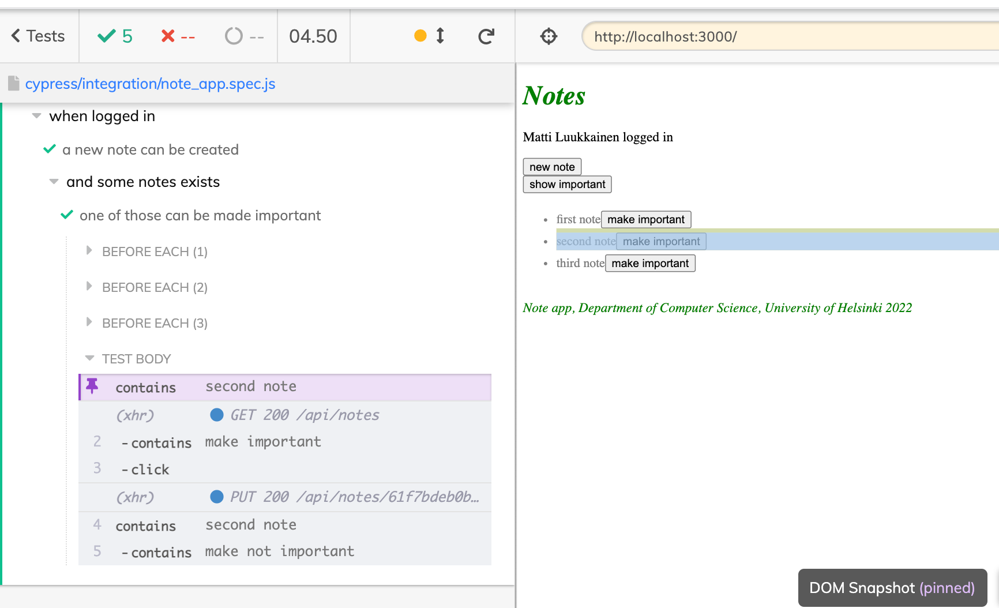
通过点击下一行_.contains("make important")_我们看到该测试使用了
对应于第二个笔记的"使重要"按钮。
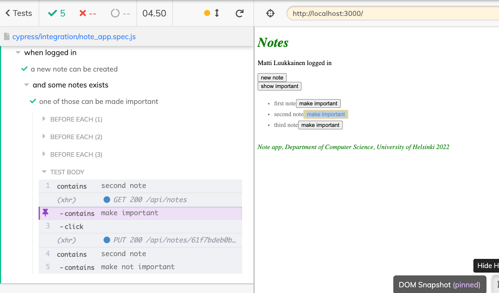
当连锁时，第二个contains命令继续从第一个命令找到的组件中进行搜索。
如果我们没有将这些命令连接起来，而是写成:
cy.contains('second note')
cy.contains('make important').click()
结果就会完全不同。测试的第二行会点击一个错误的笔记的按钮。
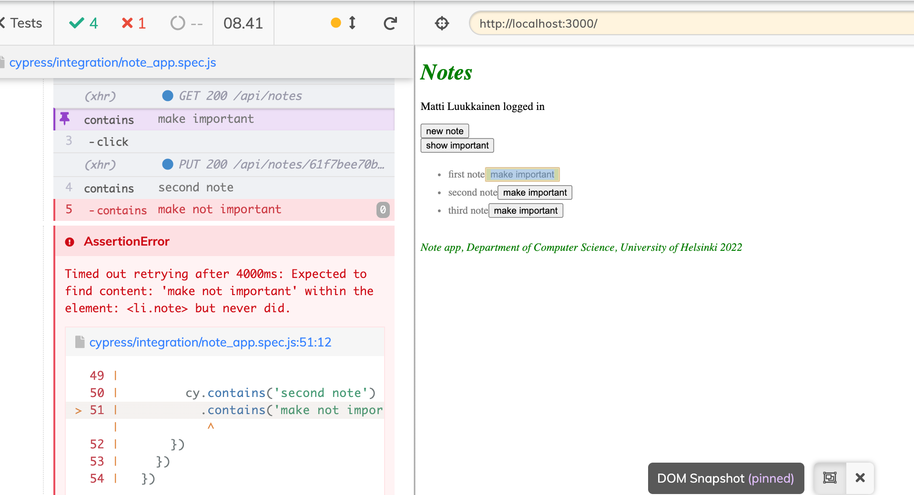
在编写测试代码时，你应该在测试运行器中检查测试是否使用了正确的组件!
让我们改变_Note_组件，使笔记的文本被渲染成span。
const Note = ({ note, toggleImportance }) => {
const label = note.important
? 'make not important' : 'make important'
return (
<li className='note'>
<span>{note.content}</span> // highlight-line
<button onClick={toggleImportance}>{label}</button>
</li>
)
}
我们的测试失败了!正如测试运行器所显示的，_cy.contains("second note")_现在返回包含文本的组件，而按钮不在其中。
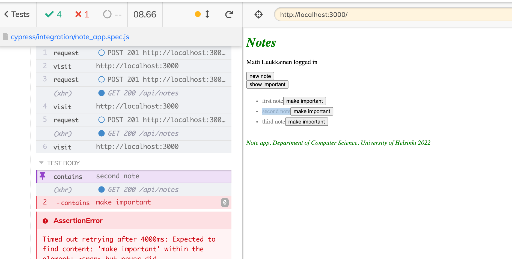
解决这个问题的一个方法是如下。
it('one of those can be made important', function () {
cy.contains('second note').parent().find('button').click()
cy.contains('second note').parent().find('button')
.should('contain', 'make not important')
})
在第一行中，我们使用parent命令来访问包含second note的元素的父元素，并从其中找到按钮。
然后我们点击按钮，并检查上面的文字是否改变。
注意，我们使用命令find来搜索按钮。我们不能在这里使用cy.get，因为它总是从整个页面搜索，并且会返回页面上的所有5个按钮。
不幸的是，我们现在有一些复制粘贴的测试，因为搜索右边按钮的代码总是相同的。
在这种情况下，可以使用as命令。
it('one of those can be made important', function () {
cy.contains('second note').parent().find('button').as('theButton')
cy.get('@theButton').click()
cy.get('@theButton').should('contain', 'make not important')
})
现在第一行找到了右边的按钮，并使用as将其保存为theButton。下面几行可以用cy.get("@theButton")来使用这个命名的元素。
Running and debugging the tests
最后，关于Cypress如何工作和调试你的测试的一些说明。
Cypress测试的形式给人的印象是测试是正常的JavaScript代码，例如我们可以这样尝试。
const button = cy.contains('login')
button.click()
debugger()
cy.contains('logout').click()
但这并不可行。当Cypress运行一个测试时，它将每个_cy_命令添加到一个执行队列中。
当测试方法的代码被执行后，Cypress将逐一执行队列中的每个命令。
Cypress命令总是返回_undefined_，所以上述代码中的_button.click()_会导致一个错误。试图启动调试器不会在执行命令之间停止代码，而是在任何命令被执行之前。
Cypress命令类似于 promise ，所以如果我们想访问它们的返回值，我们必须使用then命令来完成。
例如，下面的测试将打印应用中的按钮数量，并点击第一个按钮。
it('then example', function() {
cy.get('button').then( buttons => {
console.log('number of buttons', buttons.length)
cy.wrap(buttons[0]).click()
})
})
用调试器停止测试的执行是可能的。只有当Cypress test runner's developer console打开时，调试器才会启动。
当调试你的测试时，开发者控制台是各种有用的。
你可以在网络标签上看到测试所做的HTTP请求，控制台标签将显示你的测试信息。
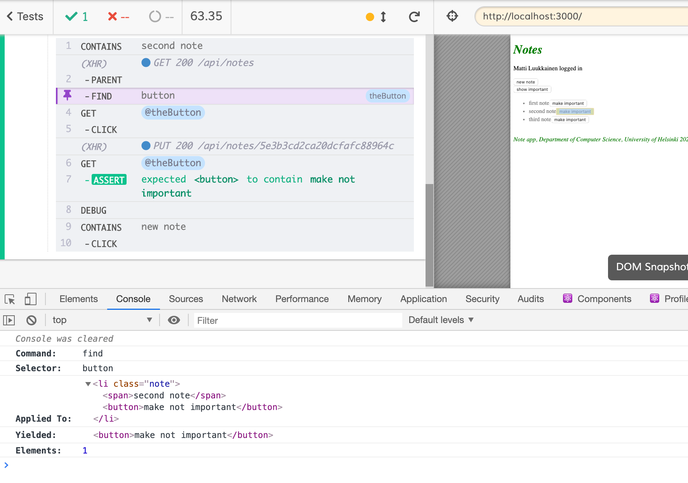
到目前为止，我们使用图形化的测试运行器运行我们的Cypress测试。
也可以从命令行运行它们。我们只需要为它添加一个npm脚本。
"scripts": {
"start": "react-scripts start",
"build": "react-scripts build",
"test": "react-scripts test",
"eject": "react-scripts eject",
"server": "json-server -p3001 --watch db.json",
"cypress:open": "cypress open",
"test:e2e": "cypress run" // highlight-line
},
现在我们可以用命令npm run test:e2e从命令行运行我们的测试。
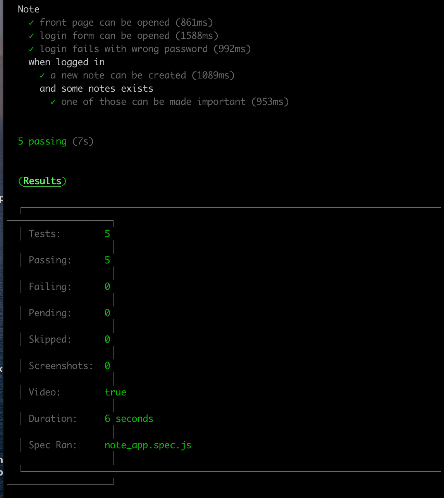
注意，测试执行的视频将被保存到cypress/videos/，所以你可能应该git忽略这个目录。
前端和测试代码可以从GitHub分支part5-11找到。